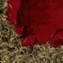
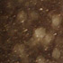
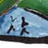

| Pic // | Name // | In Brief // |
|
| THEY'RE HERE...... | USING A INFINI-D, PHOTOSHOP AND STREAMLINE. |
|
| DAMTECH | ILLUSTRATION USING PEN IN STREAMLINE AND PHOTOSHOP. |
|

| Control 2 | The second in a series stemming from the control surrounding animal diseases such as Foot and Mouth in Europe currently. |
|
| Curtain Series 3/5 | This series of work began with two images taken within a hotel room in Melbourne... |
|

| Water Series >> rain | to capture the beauty of water. |
|
| virtual glazes | I created a number of clay slabs with oxides, glazes and textures and scanned these into the computer. |
|
| red ships | A second entity in a 3-dimensional object space, existing in the second of the four 'zones'. |

| zzzWORK | a reluctant model, layers of noise and things i just found in the street outside my house. |
|

| Pride | medium: Sand paper and Ink. |
|
| suburbia | This photograph was actually taken through the open window of my car. It was for the purpose of being used for a night at FAD cafe in Adelaide, due to my involvement with riceart studios. |
|
| Night 1 | The first in a photographic series. |
|
| CITYUNDERSIEGE | CITY UNDER SIEGE POSTER USING PHOTOSHOP AND STREAMLINE. |
|
| Tall Ships | Tall ships moor in a harbour, |

| Context is Everything | The influence in this work is from Margaret Atwood's book 'The Handmaid's Tale' in which the main character makes the statement 'Context is Everything'. |
|
| Window | Life altering moments occur where you least expect them. |